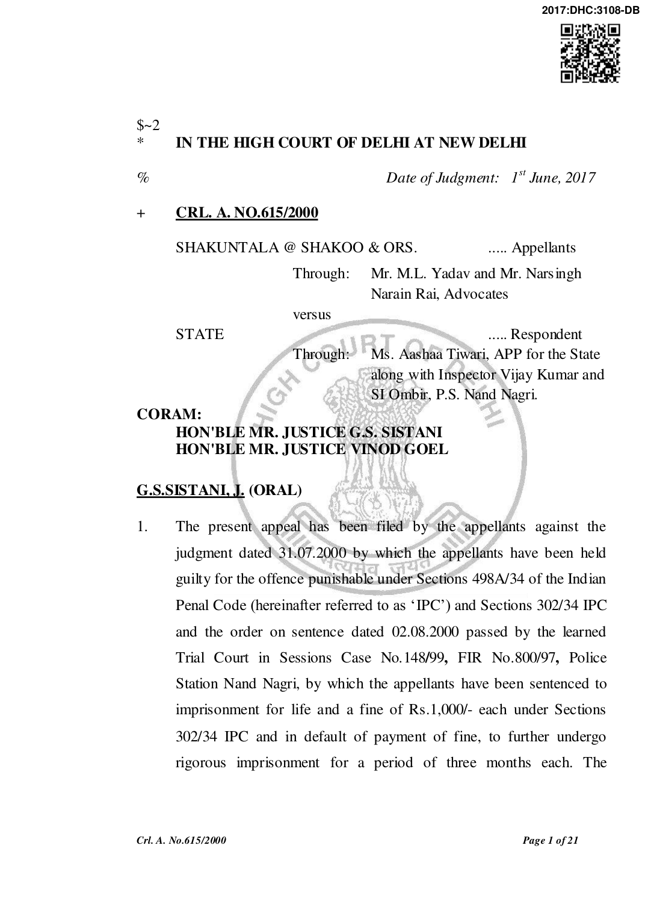

appellants were also sentenced to rigorous imprisonment for a period of one year and to pay a fine of Rs.500/- each for the offence punishable under Section 498A read with Section 34 of IPC. In default of payment of fine, to further undergo rigorous imprisonment for a period of one month each. Both the sentences were ordered to run concurrently.
- At this stage, we may note that the appellant No.3, Kishan Lal, fatherin-law, of the deceased expired during the pendency of the appeal.

- To bring home the guilt of the appellants, the prosecution examined 19 witnesses in all. Two witnesses were examined by the appellants in their defence. Statements of the appellants were recorded under Section 313 of the Code of Criminal Procedure wherein they stated that on the day of incident none of the appellants was present at the spot. They all pleaded innocence and claimed to be tried.
- Mr. Yadav, learned counsel for the appellants contends that the judgment of the Trial Court is contrary to law and facts established on record. There is no evidence on record in this case against the appellants justifying their conviction. It is the contention of the learned counsel for the appellants that the Trial Court has completely lost track of the fact that the most material witness PW-1 Sushil, husband of the deceased did not support the case of the prosecution. Another important witness PW-2 Shiv Kumar, who had taken the deceased to the Hospital, has also not supported the version of the prosecution. Mr. Yadav submits that PW-5 Deepak, brother of the deceased and PW-6 Smt. Guddubai, mother of the deceased are
Crl. A. No.615/2000
interested witnesses. Their testimonies are unreliable and cannot be the basis of the conviction of the appellants. Additionally, it is contended that PW-5, Deepak, brother of the deceased, is a planted witness and there is nothing in his evidence to show as to how he came to the spot from Gwalior. Even otherwise, PW-5 in his testimony has categorically stated that except for usual domestic fights, there was no reason for the so-called rift between the deceased and the appellants. Mr. Yadav submits that the testimony of PW-6,

mother of the deceased, is neither truthful nor reliable which is evident from the repeated endorsements made on the MLC that the patient was unable to making any statement. In case, the deceased was unable to make any statement, there was no possibility for her to inform her mother that the appellants had burnt her. Thus, her entire testimony should be discarded.
- Mr. Yadav also submits that the dying declaration cannot be relied upon in the facts of the present case as the deceased had been admitted to the Hospital with 100% burn wounds and thus, she would not have been in a position to disclose to the Doctor as to how she was set on fire by her father-in-law, brother-in-law and sister-in-law. It is contended, while placing reliance on the cross-examination of PW-11 Dr. Kapila Goel that a person with 100% burn wounds would not be oriented and would not have been in a position to talk. Mr Yadav contends, while relying on the testimony of PW-11, that whenever this Doctor had examined the patient, he found her to be unconscious and further in 100% burnt condition.
Crl. A. No.615/2000
- Mr. Yadav has drawn the attention of the Court to the statement of DW-1 Nakul to show that the deceased had committed suicide as a demand of Rs.1000/- was made by her brother, which she could not fulfil and she partially made a payment of Rs.500/- and as a result of facing harassment at the hands of her own family, she poured kerosene oil on herself and burnt herself, while the Trial Court has not given any weightage to the defence witness. To substantiate his argument that the Court must give equal weightage to the defence as the

prosecution witness, Mr. Yadav relies on the judgment in the case of State of Haryana v. Ram Singh, reported at (2002) 2 SCC 426, more particularly para 20 wherein it was held as under”
“20.....Incidentally be it noted that the evidence tendered by defence witnesses cannot always be termed to be a tainted one the defence witnesses are entitled to equal treatment and equal respect as that of the prosecution. The issue of credibility and the trustworthiness ought also to be attributed to the defence witnesses at par with that of the prosecution. Rejection of the defence case on the basis of the evidence tendered by defence witness has been effected rather casually by the High Court....”
- Mr. Yadav also contends that a person with 100% burn injuries could not have been in a position to give the details of the persons who had burnt her. The appellants were not present at the place when the incident took place and the appellants were residing at a different floor of the same house and, thus the Trial Court could not have convicted them in the absence of their presence having been established. Mr.Yadav has also relied upon a decision rendered by a Division Bench of this Court in the case of Angoori Devi & Anr v. State,
Crl. A. No.615/2000
reported at 230 (2016) DLT 251, of which one of us, (G.S. Sistani, J.), was also a member, in support of his contention that the intent of the deceased was to rope in all the family members. Mr. Yadav has also submitted, while relying on the post mortem report, that no smell of kerosene was found on the scalp of the deceased and in the absence thereof, the dying declaration would be unbelievable as the deceased had stated that the appellants had poured kerosene oil on her and put her on fire.

- Mr. Yadav also submits that there is no evidence on record to show that the appellants were present at the spot, at the time when the deceased was burnt. Learned counsel submits that none of the witnesses, on the basis of which the Trial Court has returned a finding of guilt, have stated that either of the appellants was present at the time of the incident. This gains importance as the deceased was taken to the hospital by PW-2 Mr. Shiv Kumar, who was distantly related to the deceased along with her brother PW-5 Mr. Deepak. Mr. Yadav contends that in case the deceased was in a fit state of mind to disclose to the Doctor that she was set on fire by her father-in-law, brother-inlaw and sister-in-law, this fact would certainly have been disclosed by her to her own family members who took her to the hospital, but neither PW-2 nor PW-5 has supported the case of the prosecution or testified that the appellants were present at the place of the incident. In this view of the matter, the dying declaration cannot be accepted. To substantiate his argument that the appellants were not present at the spot when the deceased sustained burn injuries, the counsel relied on
Crl. A. No.615/2000
Jumni and Others v. State of Haryana, reported at 2014(3) Scale 588, whereby it was held in paragraph 27 that the plea of alibi should be held at an equal footing to the evidence provided by the prosecution. In para 27 of the judgment, it was held as under: "27. On the standard of proof, it was held in Mohinder Singh v. State, 1950 SCR 821 that the standard of proof required in regard to a plea of alibi must be the same as the standard applied to the prosecution evidence and in both cases it should be a reasonable standard. Dudh Nath Pandey goes a step

further and seeks to bury the ghost of disbelief that shadows alibi witnesses, in the following words: "Defence witnesses are entitled to equal treatment with those of the prosecution. And, courts ought to overcome their traditional, instinctive disbelief in defence witnesses. Quite often, they tell lies but so do the prosecution witnesses."
- Mr. Yadav, learned counsel for the appellants has also contended before us that had the appellants been present, they would have accompanied the deceased to the hospital or in case the deceased was subjected to harassment by her in-laws for demand of dowry the deceased would have implicated the husband as well. To the contrary, PW5 Deepak, the brother of the deceased has clearly testified that the behaviour of the in-laws of his sister was cordial, except for some usual domestic quarrel which used to take place.
- Per contra, Ms. Aashaa Tiwari learned counsel for the State submits that the prosecution has been able to prove its case beyond any shadow of doubt. She submits that merely because the deceased was taken to the Hospital and as per the MLC, she had 100% burn wounds,
Crl. A. No.615/2000
that by itself would not mean that she could not give the details of how she was burnt. Drawing the attention of the Court to the MLC, learned counsel contends that the Doctor has not only given the relationship of the persons, who burnt her but also named each person. She contends that there is nothing on record to show that the Doctor had any motive to falsely implicate the appellants. Neither there is any evidence on record to show that the Doctor was aware of the names of the family members of the deceased, hence the endorsements

on the MLC is highly reliable piece of evidence and the Trial Court has rightly relied upon the same and held the appellants to be guilty of burning a 19 years old girl, who was married three-and-a-half years prior to the date of incident i.e. 18.11.1997. She further submits that the testimonies of the mother and the brother of the deceased are consistent to show that the deceased was being harassed by her inlaws. The mother (PW-6) has named the father-in-law, brother-in-law and sister-in-law of the deceased as the persons who used to harass her daughter and also made demands of money from her. She also testified that even after giving birth to a child, her daughter had stayed with her for seven months. Even post her returning to the in-laws house, she had learnt that her father-in-law had beaten her and 15 days thereafter, the incident of burning took place. Ms. Tiwari submits that PW-6 has categorically testified that her daughter had told her that all the three persons had burnt her and also told her that all the three persons had crossed the limit of harassment. She had also made a similar statement before the Sub-Divisional Magistrate and she identified her signatures at point „A‟. Ms. Aashaa Tiwari also
Crl. A. No.615/2000
contends that PW-5 Deepak, brother of the deceased who was 25 years of age when his statement was recorded, belongs to a poor section of society and has no educational background and understanding that due to domestic problems, her sister remained in their house for 7-8 months after delivery. The fact that the girl stayed with her mother for seven months would show that the domestic fights were not a negate fights; else no girl would stay with her mother for seven months. The brother also testified that once the in-laws of his deceased sister had

demanded money for construction of house, but they had refused as being poor persons. He also testified that his sister would tell him that her in-laws used to harass her and did not provide adequate food and kept her hungry. Ms. Tiwari also submits that it is a settled law that an order of conviction can be passed on the basis of a dying declaration. The Doctor, who recorded the dying declaration, was fully competent and no further corroboration is required.
- We have heard the learned counsel for the parties, examined the Trial Court record and considered the testimonies of various witnesses.
- The arguments of learned counsel for the appellants can be summarised as under:-
- The dying declaration is not reliable.
- The deceased was not in a fit state of mind to give a dying declaration.
- The prosecution has failed to establish the presence of the appellants which would cast a serious doubt on the dying
Crl. A. No.615/2000
declaration.
- The dying declaration is unreliable as the deceased did not make any such statement on her way to the hospital before PW-2 Mr. Shiv Kumar, who was related to her, and PW-5 Mr. Deepak, who was none else but her brother.
- In the presence of serious doubts, the prosecution has not been able to produce any evidence to corroborate the dying declaration.

- In the absence of smell of kerosene oil detected either on the clothes or scalp of the deceased the dying declaration cannot be relied upon.
- No smell of kerosene was found by the Doctor in the MLC, in the FSL report and in the post-mortem report.
- The submissions of Ms.Tiwari, learned counsel for the State can be summarised as under:-
- The appellants were present at the time of the incident.
- The dying declaration can be the sole basis of conviction.
- The Doctor had no motive to falsely implicate the family members and he recorded the dying declaration truthfully. PW-5 has testified that in-laws of the deceased had demanded money for construction of a house, her in-laws used to harass her and did not provide her adequate food and kept her hungry.
- The law is well settled that an order of conviction can be passed solely on the basis of a dying declaration given to the Doctor, who was fully competent and thus no corroboration is required.
Crl. A. No.615/2000
The law with regard to conviction on the basis of a dying declaration is well settled. It is equally well settled that any order of conviction can be based solely on the basis of a dying declaration and no corroboration is required provided the Court is satisfied that the dying declaration is truthful, independent, a person was in a fit state of mind, the statement was not made on account of any tutoring or prompting.
- The first question which thus arises for consideration before this Court

is as to whether the dying declaration is truthful, reliable or the same is untrustworthy and is a result of tutoring and prompting.
- The Hon'ble Supreme Court has laid down in several judgments the principles governing dying declaration, which could be summed up as under as indicated in Smt. Paniben v. State of Gujarat reported at 1992 Cri LJ 2919: "(i) There is neither rule of law nor of prudence that dying declaration cannot be acted upon without corroboration.
- If the Court is satisfied that the dying declaration is true and voluntary it can base conviction on it, without corroboration.
- The Court has to scrutinize the dying declaration carefully and must ensure that the declaration is not the result of tutoring, prompting or imagination. The deceased had an opportunity to observe and identify the assailants and was in a fit state to make the declaration.
- Where dying declaration is suspicious, it should not be acted upon without corroborative evidence.
Crl. A. No.615/2000
- Where the deceased was unconscious and could never make any dying declaration the evidence with regard to it is to be rejected.
- A dying declaration which suffers from infirmity cannot form the basis of conviction.
- Merely because a dying declaration does contain the details as to the occurrence, it is not to be rejected.
- Equally, merely because it is a brief statement, it is not to be discarded. On the contrary, the shortness of the statement itself guarantees truth.

- Normally the Court in order to satisfy whether deceased was in a fit mental condition to make the dying declaration look up to the medical opinion. But where the eyewitness said that the deceased was in a fit and conscious state to make the dying declaration, the medical opinion cannot prevail.
- Where the prosecution version differs from the version as given in the dying declaration, the said declaration cannot be acted upon.
- Where there are more than one statement in the nature of dying declaration, one first in point of time must be preferred. Of course, if the plurality of dying declaration could be held to be trustworthy and reliable, it has to be accepted." (Emphasis Supplied)
- In the case of Jitender Kumar vs. State NCT of Delhi reported at 2009 (1) JCC 491, a Division Bench of this Court dealt with the similar issue and acquitted the appellant for the offence punishable under Section 302 and 498A of IPC. It was held that no corroboration is required to a dying declaration, but, to sustain a conviction on a dying declaration, the Court has to record a satisfaction that the same contains the nugget of truth. Relevant paras 24 to 30 read as under:
Crl. A. No.615/2000
“24. Way back in the year 1958 in the decision reported as AIR 1958 SC 22, Khushal Rao v. State of Bombay, the Supreme Court spoke as under; pertaining to dying declaration: “17. Hence, in order to pass the test of reliability, a dying declaration has to be subjected to a very close scrutiny, keeping in view the fact that the statement has been made in the absence of the accused who had no opportunity of testing the veracity of the statement by cross-examination. But once, the Court has come to the conclusion that the dying declaration was the truthful

version as to the circumstances of the death and the assailants of the victim, there is no question of further corroboration. If, on the other hand, the Court, after examining the dying declaration in all its aspects, and testing its veracity, has come to the conclusion that it is not reliable by itself, and that it suffers from an infirmity, then, without corroboration it cannot form the basis of a conviction. Thus, the necessity for corroboration arises not from any inherent weakness of a dying declaration as a piece of evidence, as held in some of the reported cases, but from the fact the Court, in a given case, has come to the conclusion that that particular dying declaration was not free from the infirmities, referred to above or from such other infirmities as may be disclosed in evidence in that case.”
- Suffice would it be to state that a dying declaration is a piece of evidence and has to be considered along with other relevant and admissible evidence which is brought on record.
- Where evidence on record casts a doubt on a factual aspects disclosed in a dying declaration, unless explained satisfactorily to the Court, the same would be fatal to a dying declaration.
Crl. A. No.615/2000
- In the instant case it is relevant to note that the brother and father of the deceased as also the deceased herself had made grievances against the mother-in-law, the brother-in-law and minor sister-in-law of the deceased. The possibility of the deceased falsely implicating the three is in the realm of a probability. With regard to dying declarations as held in the decision reported as 2006(2) Scale 482 P. Mani v. State of Tamil Nadu, while considering dying declarations Courts have to be careful in weighing the fact whether the deceased had been nurturing a grudge against the persons accused by the maker of the dying declaration.

- Now, Poonam is categoric in her statement that her mother-in-law poured kerosene over her. The clothes which she was wearing at the time when she sustained the burn injuries (in partially burnt conditions) were taken possession of by the Doctor at the hospital where Poonam was admitted and duty fully handed over to the Investigating Officer who seized the same vide seizure memo Ex.PW-2/1. Lack of kerosene residues being detected in the clothes as evidenced by Ex.PW-14/A casts a doubt whether any kerosene was at all used. The used match-sticks, the unused match- sticks and the match box which were lifted from the place of occurrence i.e. the kitchen of the matrimonial house of Poonam also showed no traces of kerosene residues. The same is suggestive of no kerosene dropping on the floor. This casts a serious doubt whether at all kerosene was used to burn Poonam.
- We also note that even in the MLC, Ex.PW-6/2, the doctor has not recorded that he noted smell of kerosene from the person of Poonam.
- We also note that in the MLC it has not been recorded, at the place where case history is recorded, that Poonam told the Doctor that she was set on fire by her mother-in-law, her brother-in-law and her sister-in-law.” (Emphasis Supplied)
Crl. A. No.615/2000
- To deal with the submission of the learned counsel for the appellants that a person with 100% burn injuries could not have been in any position to give the details of the persons who had burnt her, it would be necessary to discuss the law laid down in this regard. The Hon‟ble Supreme Court in the case of State of Madhya Pradesh vs. Dal Singh and Others. reported at (2013) 14 SCC 159, dealt the issue of whether 100% burnt person can make a dying declaration or put a thumb impression. The relevant para 14 reads as under:

“In Mafabhai Nagarbhai Raval v. State of Gujarat, AIR 1992 SC 2186, this Court dealt with a case wherein a question arose with respect to whether a person suffering from 99 per cent burn injuries could be deemed capable enough for the purpose of making a dying declaration. The learned trial Judge thought that the same was not at all possible, as the victim had gone into shock after receiving such high degree burns. He had consequently opined, that the moment the deceased had seen the flame, she was likely to have sustained mental shock. Development of such shock from the very beginning, was the ground on which the Trial Court had disbelieved the medical evidence available. This Court then held, that the doctor who had conducted her post-mortem was a competent person, and had deposed in this respect. Therefore, unless there existed some inherent and apparent defect, the court could not have substitute its opinion for that of the doctor's. Hence, in light of the facts of the case, the dying declarations made, were found by this Court to be worthy of reliance, as the same had been made truthfully and voluntarily. There was no evidence on record to suggest that the victim had provided a tutored version, and the argument of the defence stating that the condition of the deceased was so serious that she could not have made such a statement was not accepted, and the dying declarations were relied upon.
Crl. A. No.615/2000
A similar view has been re-iterated by this Court in Rambai v. State of Chhatisgarh (2002) 8 SCC 83.” (Emphasis Supplied)
- Before the submission of learned counsel for the parties are considered, we deem it appropriate to discuss the testimonies of some of the material witnesses.
- The deceased was taken to the hospital by PW-2 Mr. Shiv Kumar who was the uncle of the deceased and residing in close vicinity of the

house of the deceased. PW-2 was declared hostile as he did not support the case of the prosecution. In his examination-in-chief this witness has testified that he was at his house drinking tea. At about 8:30a.m. in the morning, a girl Vimmi had come to his house and informed him that “Palli has burnt”. He immediately rushed to the house of Palli along with Deepak and Rekha. He found Palli in burnt condition sitting on the floor. He took her to the GTB hospital. She was not admitted at GTB hospital and he then took her to Irwin hospital but he did not know how she was burnt. He further testified that Palli did not say anything to him. This witness was then crossexamined by the learned counsel for the State. He denied the suggestion that she was burnt by her jethani, jeth and father-in-law. He was confronted with the portion of his statement Mark „Y‟ where he has so stated. He also denied the suggestion that she had stated to the Doctor that she was burnt by her in-laws. He denied making any statement to the police although he was confronted with such a statement.
Crl. A. No.615/2000
- Another important witness is PW-5 Deepak, who is none else but the brother of the deceased. While it is the case of the appellants that PW- 5 is a planted witness as there is no evidence to suggest as to how he was present at the spot from Gwalior (M.P.) at the time of the incident. This witness testified that his sister was married to Sushil 3-4 years back. The family of her in-laws comprised of her jeth, jethani and father in law. He learnt that there was a fire in the house of Golegappe Wale. When he reached the house he found his sister in a burnt

condition and on seeing her, he became unconscious. Thereafter, his mamia sasur reached there who took his sister to the hospital. He also accompanied them after regaining his consciousness.
- PW-5 Mr. Deepak has also testified that the behaviour of the in-laws of his sister was cordial but some usual domestic quarrel used to take place. His sister was blessed with one female child who was born at his house as there was no place in the house of her in-laws. Due to some domestic problem his sister remained for 7-8 months at her parents‟ house post her delivery. PW-5 has also testified that he did not state to the police how his sister was burnt as he could not say how she sustained burn injuries. There were no other reasons of fight except the usual domestic fights. This witness was also crossexamined by the State as he had too become hostile. In his crossexamination by counsel for the State he deposed that once the in-laws of the deceased had demanded money for construction of the house but the same was refused as they are poor persons. He was informed
Crl. A. No.615/2000
by his sister that her in-laws used to harass her and did not provide adequate food and kept her hungry.
- PW-6 Smt. Guddubai, mother of the deceased has testified that fatherin-law, jeth and jethani of the deceased used to harass her daughter and they would demand money from her. She gave articles but was not able to give cash on their demand. Her daughter was blessed with a child when she was in her house (mother‟s house) where she remained there for seven months after which she was taken away by her in-laws.

She was informed that her daughter had been burnt. She was informed by her own daughter that all the three appellants have burnt her. She reached Delhi on 19.11.1997 where she met her daughter who told her that all the three accused persons crossed the limit of harassment. Post her death, the statement of PW-6 was recorded by the SDM.
- During cross-examination, this witness stated that when she reached the hospital no police official was present and on seeing her, her daughter told her that she had been burnt by her jeth, jethani and father in law. She denied the suggestion that when she talked to her daughter at about 6:30 pm, she was not conscious.
- PW-10 Dr. Bharat Singh has testified that the patient was admitted to the hospital with a history of being burnt by her jeth Bhondu, jethani Sakko and sasur Kishan Lal by putting on her kerosene oil. He also recorded that she was burnt 100%. He had then referred the patient for Emergency Ward for expert opinion and management. During crossexamination he testified that the MLC was prepared in his own handwriting. He explained the meaning of oriented as „able to
Crl. A. No.615/2000
understand‟. He also testified that the patient was in a condition to speak and to understand what he had asked.
- Another important witness is PW-11 Dr Kapila Goel. She testified that on 19.11.1997 when she was posted at LNJP Hospital she had seen the patient Palli at about 1:20 p.m. and found that she was unfit for statement and made an endorsement at point-A on the opinion Ex.PW11/A. Again on 20.11.1997 at 1:00 p.m. after examining the patient she found her unfit for statement. Her opinion is Ex.PW-11/B.

She also examined the patient on 21.11.1997 and found the patient unfit to make a statement. Her cross-examination reads as under:- “Every time when I saw the patient on particular time on the given dates, patient was found unfit for statement. When first time I saw the patient, she was unconscious. It is necessary that all the 3 days when I examined her she remained unconscious, but when I saw her, she was unconscious. In the 100% burnt condition and if patient comes immediately to the hospital, he may remain oriented at that time. And it depends upon person to person that how long the person can remain in conscious condition and it depends upon the types of the injuries also. I did not see this patient in an oriented condition.”
- The prosecution has also examined the formal witnesses. It is evident from the record that the mother of the deceased reached hospital only after the deceased was admitted and her MLC was recorded. Thus, it cannot be stated that the dying declaration was a result of prompting by the mother of the deceased as she was not present at the relevant time. Two other persons who could have been in a position to prompt
Crl. A. No.615/2000
or tutor the deceased are PW-2 Shiv Kumar and PW-5 Deepak being uncle and brother of the deceased. Since both these witnesses have not supported the case of the prosecution, thus, it cannot be said that they were responsible in tutoring the deceased in making the dying declaration. The rule of prudence requires that the dying declaration should be examined carefully by the Court as this is the only form of a statement which can be relied upon by the Court without any opportunity for the defence to cross-examine the person who has made

such a statement. We also find the need to seek corroboration of this dying declaration as the brother of the deceased who had removed his sister to the hospital along with his uncle has not testified either with regard to the presence of the appellants at the place of the incident; neither such a statement has been made by PW-2, the uncle of the deceased. To rely upon the dying declaration without any corroboration and to uphold the order of conviction in this case would be highly unsafe as there is no evidence to establish the presence of the appellants at the spot, when the deceased sustained burn injuries. We find that the corroboration would be necessary as the MLC does not refer to the smell of kerosene oil. There is no presence of smell of kerosene from the scalp of the deceased in the FSL report except that on the clothes it is opined that there is smell of some high boiling petroleum hydro carbon residue. In the post-mortem report Ex.PW- 18/A it has been stated “no smell of kerosene present on the body or scalp hairs”.
Crl. A. No.615/2000
- Learned counsel for the State has submitted that the dying declaration finds corroboration from the testimony of PW-6 Smt. Guddubai (mother of the deceased) who has categorically stated that she was informed by her daughter that her father in law, brother in law and sister in law had set her on fire after pouring kerosene oil, but we agree with the finding of the Trial Court that the testimony of PW-6 mother is highly unreliable. We also find the testimony of PW-6 to be unreliable for the reason that the endorsements made on the MLC

which have been duly proved by PW-11 Dr. Kapila Goel that the patient was unfit for the statement at 1:20 p.m. on 19.11.1997, at 1:00 p.m. on 20.11.1997 and also on 21.11.1997. Thus, we cannot believe that on 19.11.1997 at 6:00 p.m. the patient was in a fit state of mind to state before her mother that she had been burnt by the appellants herein.
- Taking into consideration the law as laid down by the Apex Court and circumstances of the present case, we are unable to accept the view of the Trial Court. The allegations are without any foundation and seem to be false and motivated. The dying declaration cannot be relied upon to convict the appellants. We are of the considered view that the prosecution has failed to prove its case against the appellants beyond reasonable doubt. The appellants deserve benefit of doubt. The appeal is allowed. Conviction and sentence recorded by the trial Court are set aside. Bail bonds are cancelled and the sureties stand discharged.
Crl. A. No.615/2000
- The Trial Court record be sent back along with a copy of this judgment.
G. S. SISTANI, J.
VINOD GOEL, J.

JUNE 01, 2017//pst/n006E
Crl. A. No.615/2000